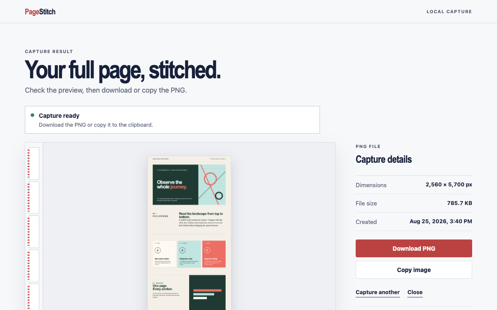

Vollständige Aufnahme
Auch was weiter unten liegt, gehört ins Bild.
PageStitch nimmt Seiten auf, die höher – und breiter – als das Browserfenster sind, und fügt die einzelnen Ansichten zu einem Bild zusammen.
Chrome-Erweiterung · lokale Aufnahme
PageStitch scrollt durch eine komplette Webseite, nimmt sie auf und fügt sie zu einem sauberen PNG zusammen – privat, direkt in Chrome.

Gemacht zum Weitergeben
Für Fehlerberichte, Design-Reviews, Recherchen, Belege und jeden Moment, in dem ein vollständiges Bild mehr sagt als ein Stapel zugeschnittener Screenshots.
Vollständige Aufnahme
PageStitch nimmt Seiten auf, die höher – und breiter – als das Browserfenster sind, und fügt die einzelnen Ansichten zu einem Bild zusammen.
Sauberes Ergebnis
Sehen Sie sich das vollständige Bild auf einer lokalen Ergebnisseite an und laden Sie das PNG dann herunter oder kopieren Sie es, sofern die Browserrichtlinien das erlauben.
Privat von Grund auf
Kein Konto, kein Cloud-Speicher, keine Analysen, keine Werbung, kein Tracking und kein Remote-Code. Die Aufnahme gelangt nie zu uns.
Drei Schritte, ein Ergebnis
PageStitch übernimmt die monotone Arbeit. Lassen Sie den Quell-Tab aktiv, während das Badge den Fortschritt anzeigt.
Zur Anleitung für die AufnahmeWählen Sie eine normale HTTP- oder HTTPS-Seite, die über das sichtbare Fenster hinausreicht.
Die Erweiterung misst die Seite, scrollt durch sie hindurch, nimmt jede Ansicht auf und stellt Ihre Scrollposition wieder her.
Prüfen Sie das zusammengefügte Ergebnis, laden Sie es herunter oder kopieren Sie es direkt in den nächsten Arbeitsschritt.
Der kürzestmögliche Weg Ihrer Daten
PageStitch verarbeitet visuelle Inhalte, Layoutmaße und die URL des ausgewählten Tabs ausschließlich, um den von Ihnen angeforderten Screenshot zu erstellen. Es wird nichts an den Entwickler oder an Dritte übertragen.
Klare Grenzen
Geschützte SeitenChrome-Einstellungen, der Web Store, Seiten anderer Erweiterungen und URLs ohne HTTP(S) können nicht aufgenommen werden.
Veränderliche LayoutsSeiten, die animiert sind, endlos nachladen oder sich beim Scrollen verändern, werden möglicherweise nicht perfekt zusammengefügt.
Sehr große SeitenBei ungewöhnlich hohen oder breiten Ergebnissen gelten die Canvas-Limits des Browsers.
Gut zu wissen
Nein. Aufnahme und Zusammenfügen erfolgen lokal in Chrome. PageStitch hat keinen Server, kein Kontosystem, keine Analysen und keinen Cloud-Speicher.
PageStitch exportiert ausschließlich PNG. PDF, JPEG sowie Werkzeuge zum Kommentieren oder Bearbeiten sind derzeit nicht enthalten.
Chrome nimmt den sichtbaren, aktiven Tab auf. Ein Tab-Wechsel während der Aufnahme würde die falschen Pixel liefern, deshalb bricht PageStitch in diesem Fall sicher ab.
Nur activeTab, scripting und offscreen: vorübergehender Zugriff auf die Seite nach Ihrem Klick, ein mitgelieferter Aufnahmehelfer und eine lokale, unsichtbare Zeichenfläche zum Zusammenfügen.
Bereit für lange Seiten
PageStitch installieren, Seite öffnen und mit einem Klick aufnehmen.
Zu Chrome hinzufügen